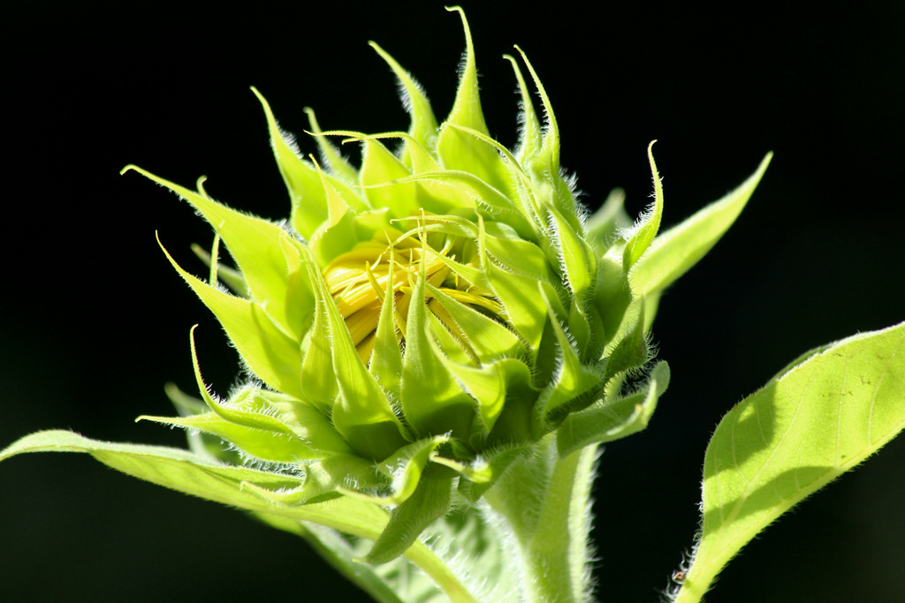
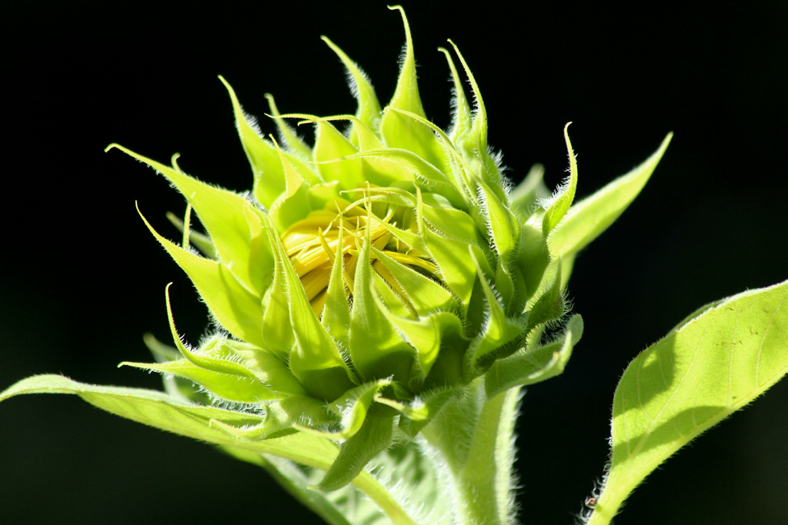

Botany can be considered a subset of biology that specifically focuses on plants. Thus, botanists (plant biologists) may study a wide range of topics within the plant world. On the whole, botanists study an estimated 400,000 species of living plant organisms.